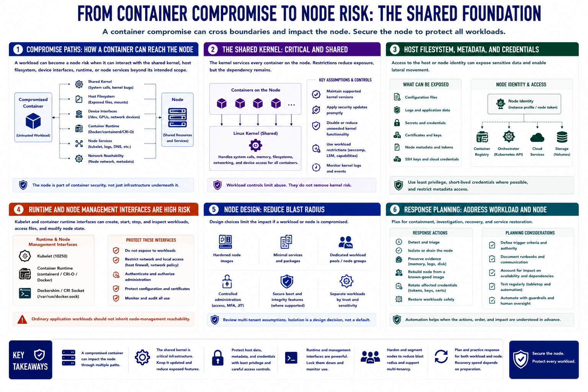

Host and Node Risk
Connecting to LMS... Progress: in progress

Narration
A compromised container can become a node risk when the workload can interact with the shared kernel, host filesystem, device interfaces, runtime, or node services beyond its intended scope. The node is therefore part of container security, not merely infrastructure underneath it.
The shared kernel processes system requests from every container on the node. Kernel maintenance, supported versions, security updates, and reduction of exposed functionality are important control assumptions. Workload restrictions reduce exposure but do not remove the kernel dependency.
Host filesystem access can expose configuration, logs, application data, or credentials. Node metadata and credentials may allow the node to authenticate to registries, orchestrators, cloud services, or storage. Protect these assets with least privilege, short-lived credentials where possible, and careful metadata access controls.
Kubelet and container-runtime interfaces perform powerful management operations. Restrict network and local access, authenticate and authorize administration, protect configuration, and monitor use. Ordinary workloads should not inherit node-management reachability.
Node design can reduce blast radius through hardened images, minimal services, dedicated workload pools, controlled administration, secure boot and integrity features where supported, and separation of workloads with different trust or sensitivity. Multi-tenant assumptions deserve explicit review.
Response planning should address both workload and node. Teams need criteria for isolating or draining a node, preserving evidence, replacing it from a known-good image, rotating affected credentials, and safely restoring workloads. Automation helps only when these actions and their availability impact are understood in advance.